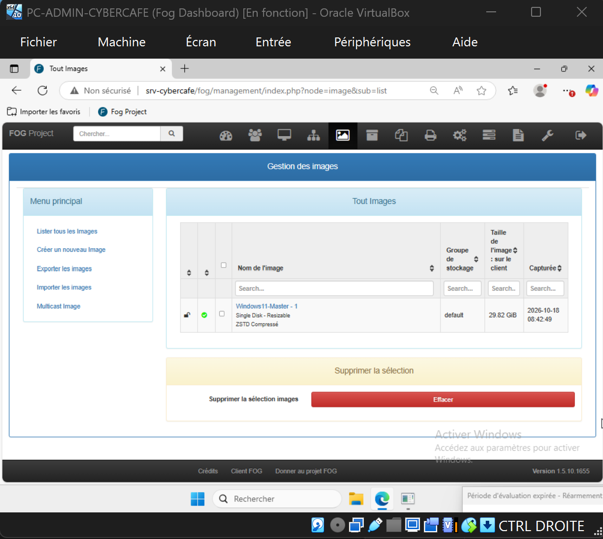
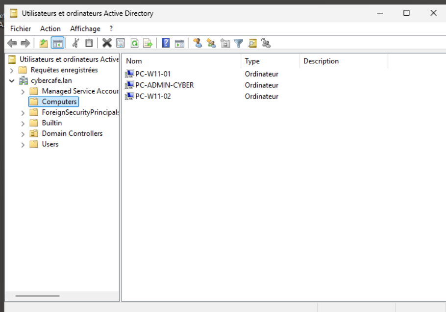
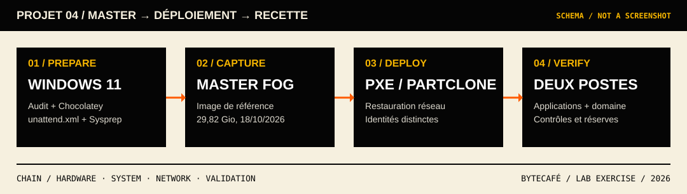

Windows 11 / FOG Deployment
Project overview
Le scénario de formation consiste à moderniser le matériel d’un cybercafé puis à industrialiser la préparation de postes. La première mission aboutit à un devis justifié et compatible avec les équipements existants. La deuxième prépare un Windows 11 de référence, ses applications et son image FOG. La troisième restaure cette image sur deux machines virtuelles distinctes et vérifie les logiciels, les identités et l’intégration au domaine Active Directory. Les résultats et écarts sont consignés dans une procédure illustrée destinée au client fictif.
Concrete skills
Evidence

Master Windows 11 enregistré dans FOG, 29,82 Gio. La capture prouve sa présence dans le catalogue, pas encore sa restauration sur un poste.

Les deux postes déployés et le poste administratif apparaissent dans Active Directory. Le canal sécurisé doit être vérifié séparément.

Synthèse du parcours : préparer, capturer, déployer, contrôler. Schéma explicatif issu du guide de formation, pas une capture d’exécution.
Validated outcome
Projet OpenClassrooms validé. Deux postes ont été restaurés depuis le même master FOG ; les six logiciels ont été contrôlés et les objets PC-W11-01, PC-W11-02 et PC-ADMIN-CYBER apparaissent dans Active Directory. Le second poste a nécessité une jonction manuelle au domaine après l’échec de la jonction automatique observée. Un contrôle du canal sécurisé et la synchronisation horaire restaient à éclaircir : ces réserves sont documentées, sans leur attribuer de cause non démontrée.